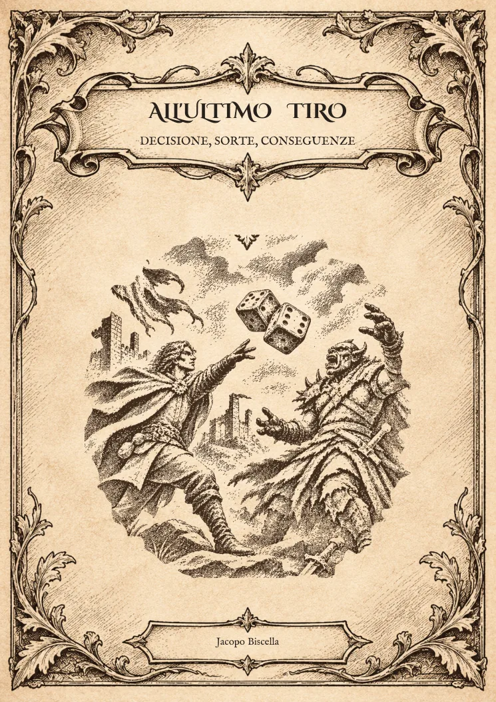

Una meccanica per tutte le azioni
Combattimento, furtività, persuasione e magia usano lo stesso tiro fondamentale.
Un gioco di Jacopo Biscella
Un gioco di ruolo fantasy essenziale, basato su dadi a sei facce, azioni decisive e conseguenze significative. Crea un Protagonista, compi le tue scelte e lascia che la storia reagisca.

Dadi comuni · 2d6+
✧Nessuna iniziativa o griglia rigida
✧Le scelte hanno conseguenze
Comuni dadi a sei facce, quattro Caratteristiche e un mondo di possibilità. Le azioni si risolvono con dadi a sei facce; Abilità e circostanze modificano il tiro.
Il combattimento è una conversazione strutturata, senza iniziativa rigida né griglia. La magia comporta rischi e un Critico fallito richiede un approccio diverso.
Un gioco di ruolo per chi non ha tempo per i giochi di ruolo.
Hai mille impegni, ma vuoi ancora raccontare storie al tavolo con gli amici. Prendi una scheda, tira comuni dadi a sei facce e fai scelte che contano.
Combattimento, furtività, persuasione e magia usano lo stesso tiro fondamentale.
Niente iniziativa rigida o griglia: descrivi l’azione, tira e affronta le conseguenze.
Ogni Grimorio prevede un costo e un Contraccolpo: un fallimento può colpire te o il gruppo.
Scoperte, Fardelli e decisioni significative guidano l’avanzamento, senza accumulare punti esperienza.
Ferite e Stanchezza condividono una riserva: magia, sforzi estremi e colpi subiti possono renderti vulnerabile.
Servono soltanto comuni dadi a sei facce (d6), senza dadi speciali né un set fisso. Tira il numero richiesto dalla prova e confronta il risultato con un Valore di Riferimento.
| Livello | Tiro |
|---|---|
| Inesperto | 2d6 — tieni il più basso |
| Competente | 1d6 |
| Esperto | 2d6 — tieni il più alto |
Due o più 6 generano un Critico. Se un Critico fallisce, occorre un cambiamento significativo prima di riprovare. Lo Sforzo aggiunge un dado al costo di una Ferita di Stanchezza.
Le regole fondamentali sono complete e pronte per essere provate. Il gioco è in sviluppo attivo; osservazioni e feedback sono benvenuti.
Leggi il manuale
{{ u.catalog.first }}
{{ u.intro_label }}
{{ u.catalog.intro_short }}